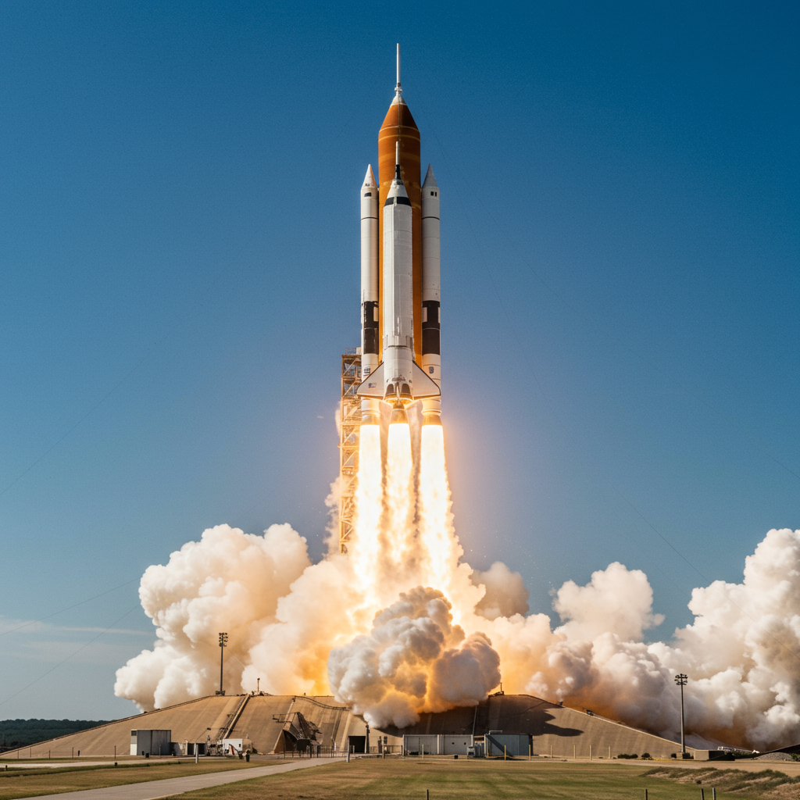

Apolo 7
Agencia: NASA
Fecha de lanzamiento: 11 de octubre de 1968
Duración: 10 días, 20 horas, 9 minutos
Tipo de misión: Orbital tripulada de prueba
Tripulación: Walter M. Schirra, Donn F. Eisele, Walter Cunningham
Objetivo: Probar el módulo de comando y servicio (CSM) en órbita terrestre baja
Carga científica: Sistema de soporte vital, comunicaciones, cámaras, procedimientos de acoplamiento
Impacto histórico
Apolo 7 fue la primera misión tripulada del programa Apolo tras el accidente del Apolo 1. Marcó un retorno exitoso a los vuelos tripulados para la NASA. Demostró el desempeño del módulo de comando en condiciones reales, permitiendo validar sistemas críticos antes del intento de alunizaje. También fue la primera transmisión televisiva en vivo desde el espacio por parte de astronautas estadounidenses.